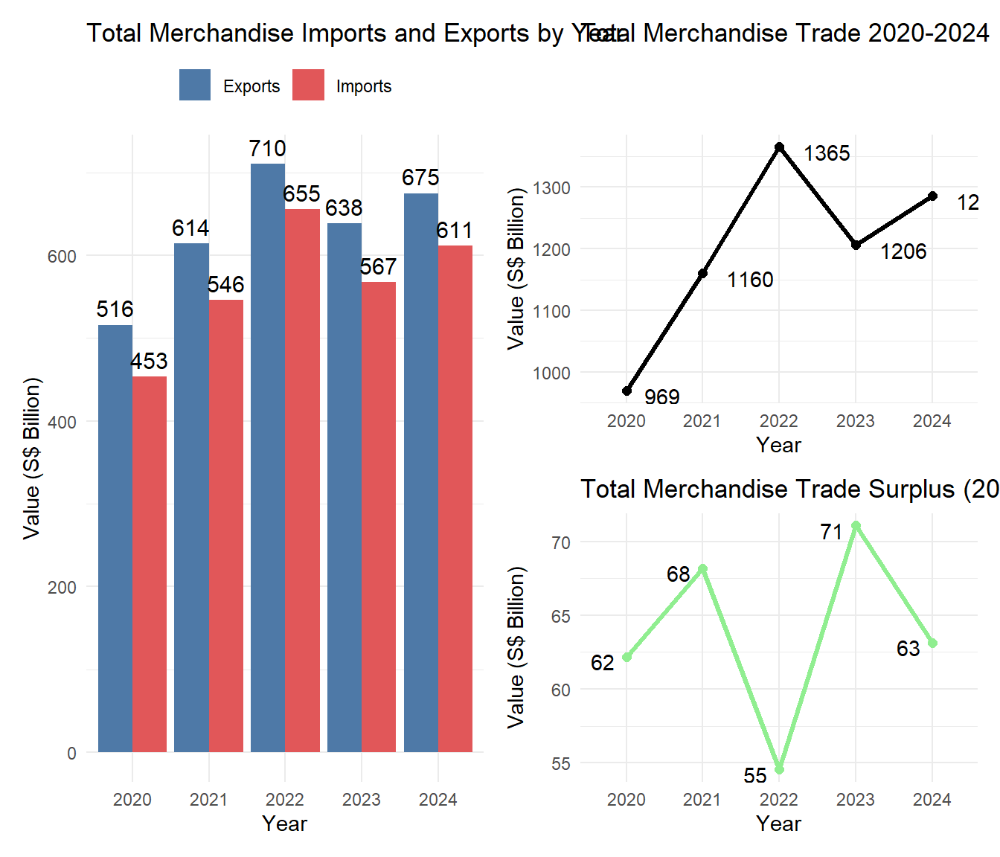
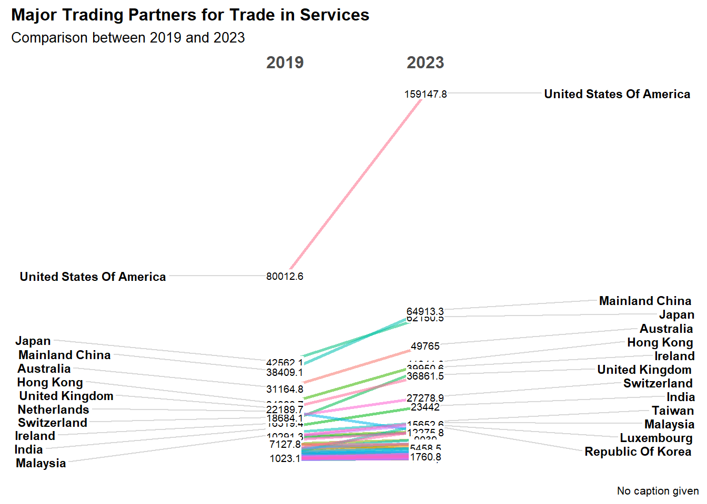

pacman::p_load(ggplot2,dplyr,patchwork,tidyverse,tidymodels,ggdist,ggridges, ggthemes,colorspace,scales,ggiraph,ggstatsplot,scales,crosstalk,plotly,CGPfunctions)Take-home Exercise 2: Be Tradewise or Otherwise
data Preparation_stackbar
library(readxl)
file_path <- "data/outputFile (2).xlsx"
# 設定檔案路徑
Non_oil_exp <- read_excel(file_path, sheet = 2, skip = 10, col_names = TRUE)
Non_oil_exp<- Non_oil_exp[46:55, ]
# 只保留 第一欄 和 第 3-14 欄
Non_oil_exp <- Non_oil_exp[c(1, 3:14)]
# 設定 A 欄（第一欄）作為 rownames（行標籤）
rownames(Non_oil_exp) <- Non_oil_exp[[1]]
# 查看數據
head(Non_oil_exp, 10)# A tibble: 10 × 13
`Data Series` `2024 Dec` `2024 Nov` `2024 Oct` `2024 Sep` `2024 Aug`
<chr> <dbl> <dbl> <dbl> <dbl> <dbl>
1 Non-Oil 15227551. 14974329. 14076449. 13893226. 15003706.
2 Food & Live Animals 1256140. 867962 937713. 907651. 997752.
3 Beverages & Tobacco 12836. 11538. 15423. 13129. 15472.
4 Crude Materials (Excl… 227289. 231788. 230642. 201371. 225752.
5 Animal & Vegetable Oi… 16292. 18539. 16745. 14108. 17481.
6 Chemicals & Chemical … 3105808. 3343658. 3213842. 3883404. 3485091.
7 Manufactured Goods 392376. 397968. 418534. 392438. 414134.
8 Machinery & Transport… 6256106. 5844226. 5983682 5465815. 6357348.
9 Miscellaneous Manufac… 2690716. 2739301. 2271051 2466593. 2532624.
10 Miscellaneous (Exclud… 1269989. 1519349. 988817. 548717. 958051.
# ℹ 7 more variables: `2024 Jul` <dbl>, `2024 Jun` <dbl>, `2024 May` <dbl>,
# `2024 Apr` <dbl>, `2024 Mar` <dbl>, `2024 Feb` <dbl>, `2024 Jan` <dbl>Non_oil_rexp <- read_excel(file_path, sheet = 2, skip = 10, col_names = TRUE)
Non_oil_rexp<- Non_oil_rexp[59:68, ]
# 只保留 第一欄 和 第 3-14 欄
Non_oil_rexp <- Non_oil_rexp[, c(1, 3:14)]
# 設定 A 欄（第一欄）作為 rownames（行標籤）
rownames(Non_oil_rexp) <- Non_oil_rexp[[1]]
# 假設你的 DataFrame 為 df
Non_oil_rexp2024 <- Non_oil_rexp %>%
mutate(`2024` = rowSums(select(., starts_with("2024")), na.rm = TRUE))Non_oil_exp2024 <- Non_oil_exp %>%
mutate(`2024` = rowSums(select(., starts_with("2024")), na.rm = TRUE))
print(Non_oil_exp2024)# A tibble: 10 × 14
`Data Series` `2024 Dec` `2024 Nov` `2024 Oct` `2024 Sep` `2024 Aug`
<chr> <dbl> <dbl> <dbl> <dbl> <dbl>
1 Non-Oil 15227551. 14974329. 14076449. 13893226. 15003706.
2 Food & Live Animals 1256140. 867962 937713. 907651. 997752.
3 Beverages & Tobacco 12836. 11538. 15423. 13129. 15472.
4 Crude Materials (Excl… 227289. 231788. 230642. 201371. 225752.
5 Animal & Vegetable Oi… 16292. 18539. 16745. 14108. 17481.
6 Chemicals & Chemical … 3105808. 3343658. 3213842. 3883404. 3485091.
7 Manufactured Goods 392376. 397968. 418534. 392438. 414134.
8 Machinery & Transport… 6256106. 5844226. 5983682 5465815. 6357348.
9 Miscellaneous Manufac… 2690716. 2739301. 2271051 2466593. 2532624.
10 Miscellaneous (Exclud… 1269989. 1519349. 988817. 548717. 958051.
# ℹ 8 more variables: `2024 Jul` <dbl>, `2024 Jun` <dbl>, `2024 May` <dbl>,
# `2024 Apr` <dbl>, `2024 Mar` <dbl>, `2024 Feb` <dbl>, `2024 Jan` <dbl>,
# `2024` <dbl>Non_oil_rexp2024 <- Non_oil_rexp %>%
mutate(`2024` = rowSums(select(., starts_with("2024")), na.rm = TRUE))
# 查看結果
print(Non_oil_rexp2024)# A tibble: 10 × 14
`Data Series` `2024 Dec` `2024 Nov` `2024 Oct` `2024 Sep` `2024 Aug`
<chr> <dbl> <dbl> <dbl> <dbl> <dbl>
1 Non-Oil 36295786. 34563618. 33767516. 32284364. 31448738.
2 Food & Live Animals 183866. 176869 187833. 196489. 196968.
3 Beverages & Tobacco 390234. 373475. 372705. 382478. 398824.
4 Crude Materials (Excl… 112978 131172. 148490. 111129. 125526.
5 Animal & Vegetable Oi… 7609. 5900. 9611. 10329. 6269.
6 Chemicals & Chemical … 2198721. 1966065. 2259290 1941365. 1868729.
7 Manufactured Goods 1116901. 1029677. 1055403. 1000466. 1206006.
8 Machinery & Transport… 28460146. 24990474. 25103550. 25524253. 24076795.
9 Miscellaneous Manufac… 2445296. 2604507. 2529626. 2436480. 2740773.
10 Miscellaneous (Exclud… 1380036. 3285479 2101007. 681376. 828848.
# ℹ 8 more variables: `2024 Jul` <dbl>, `2024 Jun` <dbl>, `2024 May` <dbl>,
# `2024 Apr` <dbl>, `2024 Mar` <dbl>, `2024 Feb` <dbl>, `2024 Jan` <dbl>,
# `2024` <dbl>total_non_oil <- Non_oil_exp2024 %>%
filter(`Data Series` == "Non-Oil") %>%
pull(`2024`) # 取出 2024 年的 Non-Oil 總值
# 篩選 Non-Oil 內的子類別
Non_oil_exp2024_stack <- Non_oil_exp2024 %>%
filter(`Data Series` != "Non-Oil") %>%
mutate(Value_Billion = round(`2024` / 1e6)) %>% # 轉換為 Billion
mutate(Percent = (`2024` / total_non_oil) * 100) %>%
mutate(`Data Series` = fct_reorder(`Data Series`, Percent, .desc = TRUE))total_non_oil_re <- Non_oil_rexp2024 %>%
filter(`Data Series` == "Non-Oil") %>%
pull(`2024`) # 取出 2024 年的 Non-Oil 總值
# 篩選 Non-Oil 內的子類別
Non_oil_rexp2024_stack <- Non_oil_rexp2024 %>%
filter(`Data Series` != "Non-Oil") %>%
mutate(Value_Billion = round(`2024` / 1e6)) %>% # 轉換為 Billion
mutate(Percent = (`2024` / total_non_oil_re) * 100) %>%
mutate(`Data Series` = fct_reorder(`Data Series`, Percent, .desc = TRUE))stack bar
單獨的plot
# ggplot 圖表
p1 <- ggplot(Non_oil_exp2024_stack, aes(x = "", y = Percent, fill = `Data Series`,
text = paste0(`Data Series`,
"<br>Value: $", Value_Billion, "Bil"))) +
geom_bar(stat = "identity", width = 0.6) +
geom_text(aes(label = paste0(round(Percent, 1), "%")),
position = position_stack(vjust = 0.5), size = 4, color = "black") +
labs(x = "Export", y = "Percentage", fill = "Categories in Non-Oil",
title = "Composition of NON-OIL DOMESTIC EXPORTS 2024",
subtitle = paste0(format(total_non_oil, big.mark = ","))) +
theme_minimal() +
theme(
plot.title = element_text(hjust = 0.5, size = 10, face = "bold"),
axis.title.x = element_text(size = 10),
axis.title.y = element_text(size = 10),
axis.text.x = element_text(size = 10),
axis.text.y = element_text(size = 10),
legend.text = element_text(size = 9),
legend.title = element_text(size = 10)
) +
scale_fill_manual(values = c(
"Food & Live Animals"= "blue",
"Beverages & Tobacco" = "#1f77b4",
"Crude Materials (Excl Fuels)" = "#d62728",
"Animal & Vegetable Oils Fats & Waxes" = "#2ca02c",
"Chemicals & Chemical Products" = "#9467bd",
"Manufactured Goods" = "#17becf",
"Machinery & Transport Equipment" = "#ff7f0e",
"Miscellaneous Manufactured Articles" = "#7f7f7f",
"Miscellaneous (Excluding Oil Bunkers)" = "#8c564b"
))
# 🎯 轉換為 plotly，啟用 tooltip
p_interactive <- ggplotly(p1, tooltip = "text")
# 顯示互動圖表
p_interactiveCombine plot
total trade data preparation
# 設定檔案路徑
total_trade <- read_excel(file_path, sheet = 2, skip = 10, col_names = TRUE)
total_trade <- total_trade[c(1,15,28), ]
# 只保留 第一欄 和 第 3-14 欄
total_trade <- total_trade[c(1, 3:62)]
# 設定 A 欄（第一欄）作為 rownames（行標籤）
rownames(total_trade) <- total_trade[[1]]
head(total_trade, 10)# A tibble: 3 × 61
`Data Series` `2024 Dec` `2024 Nov` `2024 Oct` `2024 Sep` `2024 Aug`
<chr> <dbl> <dbl> <dbl> <dbl> <dbl>
1 Total Merchandise Trad… 116278793. 110132324. 107525960. 103512460. 105709528.
2 Total Merchandise Impo… 56135912. 51802132 51415560. 49068356. 49948953.
3 Total Merchandise Expo… 60142882. 58330192. 56110400 54444104. 55760575
# ℹ 55 more variables: `2024 Jul` <dbl>, `2024 Jun` <dbl>, `2024 May` <dbl>,
# `2024 Apr` <dbl>, `2024 Mar` <dbl>, `2024 Feb` <dbl>, `2024 Jan` <dbl>,
# `2023 Dec` <dbl>, `2023 Nov` <dbl>, `2023 Oct` <dbl>, `2023 Sep` <dbl>,
# `2023 Aug` <dbl>, `2023 Jul` <dbl>, `2023 Jun` <dbl>, `2023 May` <dbl>,
# `2023 Apr` <dbl>, `2023 Mar` <dbl>, `2023 Feb` <dbl>, `2023 Jan` <dbl>,
# `2022 Dec` <dbl>, `2022 Nov` <dbl>, `2022 Oct` <dbl>, `2022 Sep` <dbl>,
# `2022 Aug` <dbl>, `2022 Jul` <dbl>, `2022 Jun` <dbl>, `2022 May` <dbl>, …total_trade_year <- total_trade %>%
mutate(
`2024` = rowSums(select(., starts_with("2024")), na.rm = TRUE),
`2023` = rowSums(select(., starts_with("2023")), na.rm = TRUE),
`2022` = rowSums(select(., starts_with("2022")), na.rm = TRUE),
`2021` = rowSums(select(., starts_with("2021")), na.rm = TRUE),
`2020` = rowSums(select(., starts_with("2020")), na.rm = TRUE)
)
print(total_trade_year)# A tibble: 3 × 66
`Data Series` `2024 Dec` `2024 Nov` `2024 Oct` `2024 Sep` `2024 Aug`
<chr> <dbl> <dbl> <dbl> <dbl> <dbl>
1 Total Merchandise Trad… 116278793. 110132324. 107525960. 103512460. 105709528.
2 Total Merchandise Impo… 56135912. 51802132 51415560. 49068356. 49948953.
3 Total Merchandise Expo… 60142882. 58330192. 56110400 54444104. 55760575
# ℹ 60 more variables: `2024 Jul` <dbl>, `2024 Jun` <dbl>, `2024 May` <dbl>,
# `2024 Apr` <dbl>, `2024 Mar` <dbl>, `2024 Feb` <dbl>, `2024 Jan` <dbl>,
# `2023 Dec` <dbl>, `2023 Nov` <dbl>, `2023 Oct` <dbl>, `2023 Sep` <dbl>,
# `2023 Aug` <dbl>, `2023 Jul` <dbl>, `2023 Jun` <dbl>, `2023 May` <dbl>,
# `2023 Apr` <dbl>, `2023 Mar` <dbl>, `2023 Feb` <dbl>, `2023 Jan` <dbl>,
# `2022 Dec` <dbl>, `2022 Nov` <dbl>, `2022 Oct` <dbl>, `2022 Sep` <dbl>,
# `2022 Aug` <dbl>, `2022 Jul` <dbl>, `2022 Jun` <dbl>, `2022 May` <dbl>, …
trade_surplus <- filtered_trade %>%
pivot_wider(names_from = `Data Series`, values_from = Value) %>%
mutate(Trade_Surplus = `Total Merchandise Exports, (At Current Prices)` -
`Total Merchandise Imports, (At Current Prices)`) %>%
select(Year, Trade_Surplus)
# 2️⃣ 繪製 Trade Surplus 折線圖
p5 <- ggplot(data = trade_surplus, aes(x = Year, y = Trade_Surplus, group = 1)) +
geom_line(color = "lightgreen", size = 1.2, linetype = "solid") + # 貿易順差線
geom_point(color = "lightgreen", size = 2) + # 綠色點
geom_text(aes(label = round(Trade_Surplus / 1e6)), vjust = -0.5, hjust = 1.5, color = "black") + # 顯示數值
labs(title = "Total Merchandise Trade Surplus (2020-2024)",
x = "Year",
y = "Value (S$ Billion)") +
theme_minimal() +
scale_y_continuous(labels = function(x) paste0(round(x / 1e6), "B")) # Y 軸數字單位為 Billion
# 3️⃣ 顯示圖表
p5
slopegraph
Data Preparation
file_path2 <- "data/outputFile (3).xlsx"
Exports_partner <- read_excel(file_path2, sheet = 4, skip = 10, col_names = TRUE)
Exports_partner <- Exports_partner[,c(1,2,6)]%>%
slice(-c(1, 25, 26,45,46,49,54,63))
Imports_partner <- read_excel(file_path2, sheet = 8, skip = 10, col_names = TRUE)
Imports_partner <- Imports_partner[,c(1,2,6)]%>%
slice(-c(1, 25, 26,45,46,49,54,63))
Exports_partner_long <- Exports_partner %>%
pivot_longer(cols = -`Data Series`, names_to = "Year", values_to = "Value") %>%
mutate(Year = as.character(Year))
Imports_partner_long <- Imports_partner %>%
pivot_longer(cols = -`Data Series`, names_to = "Year", values_to = "Value") %>%
mutate(Year = as.character(Year))
combined_partner <- full_join(Exports_partner_long, Imports_partner_long,
by = c("Year", "Data Series"),
suffix = c("_Exports", "_Imports"))
total_combined_partner <- combined_partner %>%
mutate(total = Value_Exports + Value_Imports)The plot
total_combined_partner_slope <- total_combined_partner %>%
mutate(Year = factor(Year)) %>% # 轉換 Year 為 Factor
filter(Year %in% c(2023, 2019), # 只篩選 2023 & 2019
!is.na(`Data Series`), # 移除 NA 值
`Data Series` != "")%>%
newggslopegraph(Year, total,`Data Series`,
Title = "Major Trading Partners for Trade in Services ",
SubTitle = "Comparison between 2019 and 2023")+
theme(
plot.title = element_text(size = 12, face = "bold"))
total_combined_partner_slope